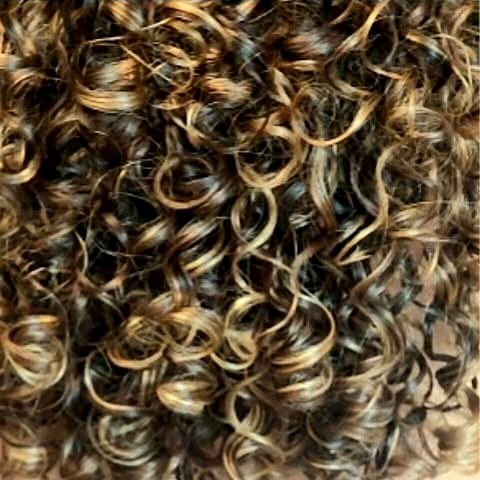
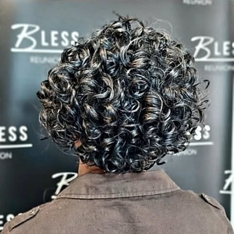
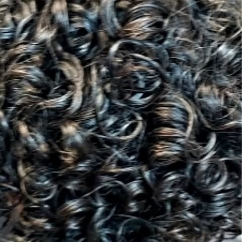
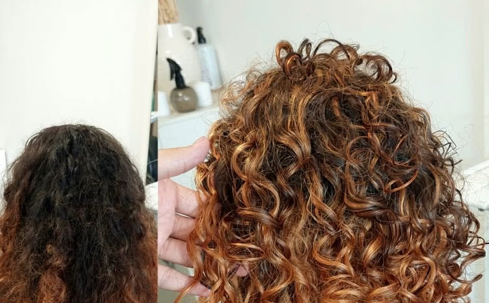
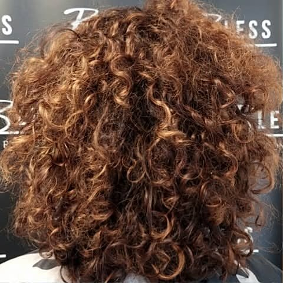
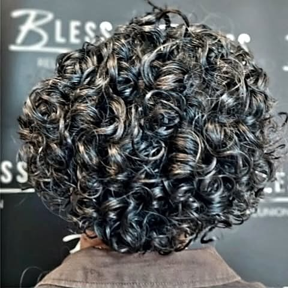
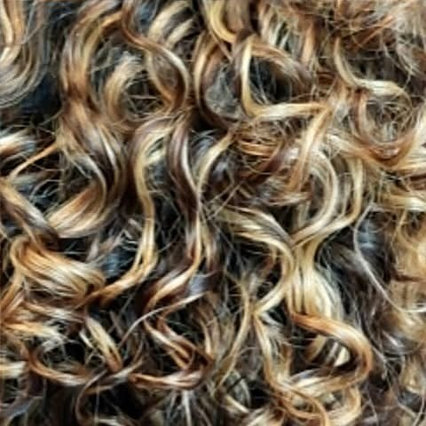
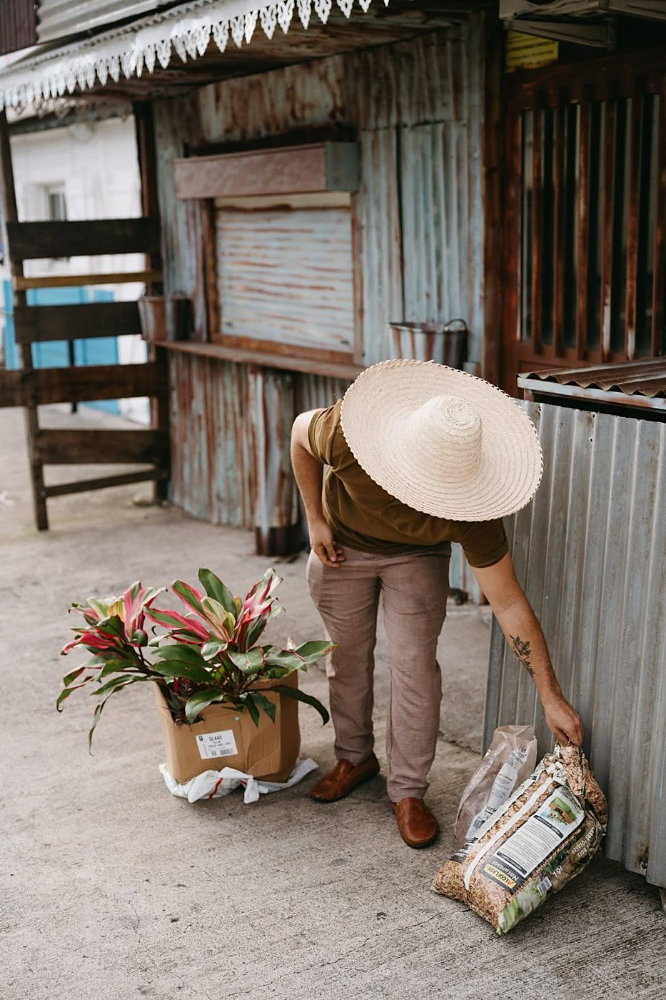
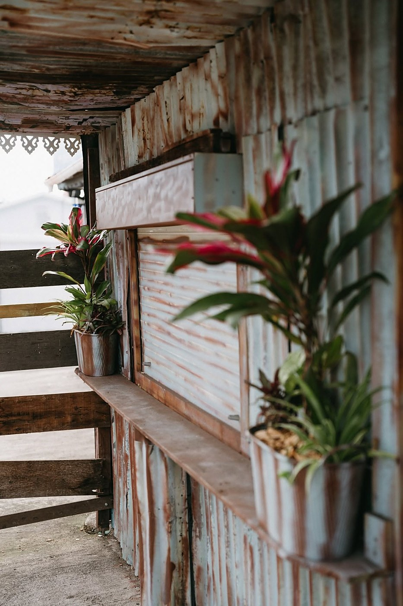

« Sové konyé i bless »
Salon de coiffure mixte spécialiste des cheveux afros : crépus, frisés, ondulés, bouclés. Ici, on révèle votre texture naturelle et on vous offre le salon rien que pour vous.



Chez BLESS, la boucle naît de votre propre texture : un protocole de soin pensé pour un maximum d'hydratation, une coupe qui met votre chevelure en valeur, et des conseils pour retrouver le même rendu chez vous.
Vincent a passé ses diplômes à Paris, en alternance dans un salon afro, puis a ouvert BLESS Réunion à Saint-Louis pour valoriser les cheveux texturés au naturel.
Les clientes sont contentes de retrouver leurs cheveux naturels. Parfois, certaines n'ont jamais vu leur propre nature de cheveux.Vincent Bolon, dans Clicanoo · mars 2024

AvantAprèsUne transformation publiée sur la page BLESS Réunion
Chaque forfait commence par un diagnostic et se termine par le touching, avec le salon privatisé pour vous. Les durées et disponibilités se consultent en direct sur la page de réservation.
Le soin qui révèle la boucle naturelle
Une prestation qui respecte la structure du cheveu : votre texture d'origine, simplement sublimée.
Couleur, reflets et lumière
Le salon est à vous le temps de la prestation : à l'abri des regards, dans la tranquillité, et votre rendez-vous commence à l'heure.
Tarifs, détails, durées et places restantes : tout est sur la page de réservation. L'adresse exacte arrive par e-mail de confirmation, et un SMS vous le rappelle la veille.
À proximité du centre-ville de Saint-Louis, avec des places de parking gratuites devant la porte du salon. Règlement par carte ou en espèces.



Glissez pour voir la suite →
Sové konyé
« Konyé », c'est le mot créole réunionnais pour désigner les cheveux afros. BLESS Réunion lui redonne toute sa fierté et porte la représentation des femmes aux cheveux afros dans l'espace visuel public et médiatique de La Réunion.
« Zordi mi swèt valoriz à li mèm dan son kozé. »
En novembre 2026, « Mon promié kanpann po met sové afro an lèr » a été dévoilée avec trois égéries, Cici Make up Glow au maquillage et Daydream à la photo. En septembre, la série « Kaz an tol, patrimoine de La Réunion » célébrait déjà les cases créoles.


Chaque année, une égérie porte les couleurs du salon et de la fierté afro.
Des rencontres avec les marmay pour leur apprendre à aimer leur vraie qualité de cheveux.
Une soirée pour célébrer son afro avec fierté : buffet, karaoké et animations.
Coiffeur au top je recommande vivement. Merci pour tout
Frederique T. · avis Facebook
Très satisfaite de mes boucles avec un bon professionnel merci à la prochaine
Nadia H. · commentaire Facebook
Excellent l'artiste 🫡
Amir O. · avis Facebook
Un bon cadeau pour révéler ses boucles, un Swin, une Kouler : le plus beau des présents pour une personne qui aime ses cheveux, ou qui a envie de les redécouvrir. Un rendez-vous dans le calme d'un salon privatisé, rien que pour elle.
Illustration · idée à imaginer ensemble avec le salon
La prise de rendez-vous se fait en ligne, en toute autonomie : tarifs, durées et disponibilités restantes y sont affichés. Les places partent vite, pensez à réserver à l'avance.
13 A rue Professeur Henri Lapierre
97450 Saint-Louis
Salon privé à proximité du centre-ville, parking gratuit devant la porte. Tous les détails arrivent avec la confirmation de rendez-vous.